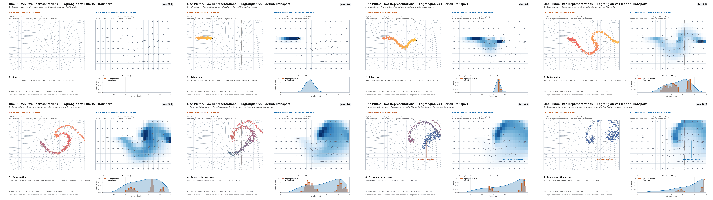

The Lagrangian framework
STOCHEM couples archived meteorology (a fixed, gridded description of the atmosphere) to a Lagrangian chemical description carried by ~50,000 moving air parcels.[1]
Eulerian meteorology, Lagrangian chemistry
The model is offline: it does not compute its own weather. Winds, temperatures, humidities, cloud and precipitation fields are read from an archived numerical weather prediction dataset — historically the UK Met Office Unified Model,[1] with recent configurations driven by ECMWF-era analyses. The meteorology lives on a fixed Eulerian mesh and is interpolated in space and time to each parcel's position.
Each of the 50,048 air parcels is a Lagrangian control volume of constant mass. A parcel stores its position (longitude, latitude, eta level) plus the full concentration vector of all transported species. Because parcels are constant-mass, mass conservation is built in: the global integral of a tracer changes only through emissions, chemistry and deposition, never through transport error.
How a Lagrangian model works, mathematically
In the Eulerian view we sit at fixed points x and watch air
flow past: the local concentration changes as
∂c/∂t = −u·∇c + S, and the u·∇c advection term
has to be discretised — which is where numerical diffusion and spurious
negative concentrations come from. In the Lagrangian view we ride
along with a parcel and ask only how its concentration changes in time:
the material derivative Dc/Dt = ∂c/∂t + u·∇c = S.
Advection disappears from the equation entirely — the parcel is the
advection — so all that remains is the source/sink term
S: emissions, chemistry, deposition. That is why STOCHEM can
carry sharp plumes across an ocean without smearing them.
The price is that the −u·∇c term also encoded real mixing:
neighbouring air parcels genuinely exchange material by turbulence. With
parcels only following the resolved wind, that exchange must be added back
artificially — STOCHEM does it stochastically, randomly reassigning parcels
within each grid cell, which is where the model gets its name and why a
cell's mean is a statistical quantity.
Lagrangian wins
- Advection is exact — no numerical diffusion, no negative mixing ratios
- Chemistry integrates once per parcel — embarrassingly parallel (OpenMP)
- Each parcel keeps an emission/trajectory history — great for plume & attribution studies
Eulerian wins
- Mixing is built into the transport scheme, not added stochastically
- Uniform grid — no empty cells or sampling noise where parcels are sparse
- Continuous fields — parcel binning must be remapped for output anyway
Follow one parcel
Dc/Dt = S in action.
dx/dt = u(x,t);
concentration evolves by chemistry and sources along that path. Toggle
"Show neighbours" to see the sibling parcels whose stochastic mixing
represents unresolved turbulence.

The grid and the timestep
Parcel positions are continuous, but mixing, emissions, deposition and
output are organised on an Eulerian analysis grid. In the current
STOCHEM-CRI configuration this is 72 × 36 × 9 — a 5° × 5°
horizontal mesh with nine unevenly spaced eta (terrain-following/pressure)
levels spanning the troposphere to roughly 100 hPa. (The original
configuration used a finer 1.25° × 0.83° × 12-level mesh with the same
~50,000-parcel philosophy.[11])
Time is handled by operator splitting. A three-hourly advection step moves every parcel along the interpolated wind field. Between advection steps the model applies its physical and chemical processes on shorter sub-timesteps: the original implementation used a five-minute chemistry step,[1] and the current Fortran code integrates the stiff CRI system with an error-controlled solver inside each parcel independently.
Stochastic mixing — the "STO" in STOCHEM
Pure parcel advection alone would never mix neighbouring air masses. STOCHEM emulates sub-grid turbulent diffusion by randomly redistributing the parcels that fall inside each grid cell: parcels are exchanged within a cell so that, statistically, a cell's population samples its well-mixed concentration, while still allowing freshly emitted or chemically distinct air to coexist transiently in the same cell.[1],[2] This is why the model is called a stochastic chemistry model — and why two runs with different random seeds (or different numbers of OpenMP threads) are members of the same stochastic ensemble rather than bit-identical trajectories.
Convection is treated separately: parcels are entrained into and detrained from convective updrafts using convective mass fluxes diagnosed from the driving meteorology, which is essential for realistic vertical profiles of short-lived tracers.[2],[10] Boundary-layer mixing is applied within the lowest levels on top of the convective scheme.
Emissions and deposition
Emissions (EMREAD / LIGHTREAD)
Surface sources (anthropogenic, biomass burning, biogenic, oceanic, soil)
are injected into parcels residing in the boundary-layer cells.
Aircraft NOx and lightning NOx are
special: they are read as altitude-resolved 3-D fields
(ACNOXmm.OUT, LNOXmm.OUT, plus a military
aircraft file) and injected at flight levels,[9]
gated by the DONO2 switch.
Deposition (DVLAND / DVSEA)
Dry deposition uses species- and surface-dependent deposition velocities
applied to parcels in the lowest layer. Wet deposition removes soluble
species via scavenging in both large-scale (dynamic) and convective
precipitation. Both are accumulated as flux diagnostics that can be
written per grid cell (.bud) or globally (.tot).
Initialisation and restarts
A cold start (INICON) seeds every parcel with a
hard-coded, zonally-symmetric July climatology — latitude-band profiles for
O3, CO, CH4 and a handful of emitted species, with
mechanism intermediates near zero — so the model needs a spin-up period for
transport and chemistry to develop realistic structure. A warm
start reads RESTART.BIN/DUMP.BIN, restoring the
full parcel list and continuing seamlessly; periodic dumps let a year-long
run be chained from monthly submissions.
What comes out
| File | Contents | Typical use |
|---|---|---|
stoch3d.dat | Eulerian-mapped species fields (mol mol−1), monthly | surface maps, zonal means, vertical profiles |
stoch3d.bud | 3-D process fluxes flagged in flux10_OH.dat (molecules cell−1 per period) | production/loss budgets, deposition maps |
stoch3d.tot | Global inventories and integrated fluxes per timestep | burden and lifetime time series |
stoch3d.sta | Station/diagnostic time series | site comparisons |
stoch3d.out | Run log: inputs, timestepping, completion | provenance checks |
DUMP.BIN | Full parcel state for restart | warm-start continuation |